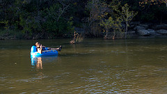
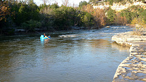
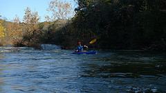
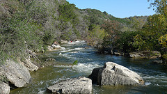
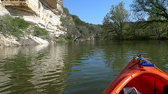
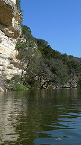
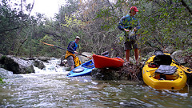
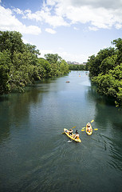
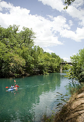
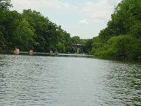

loading USGS information...
River Flow
Texas Edition
-- Texas Rivers and Streams --
-- Brazos River Basin --
Brazos River : Palo Pinto
Brazos River : Glen Rose
Brazos River : Waco
Brazos River : Bryan
-- Colorado River Basin --
Barton Springs
Barton Creek : Above Barton Springs
Barton Creek : Loop 360
Barton Creek : Lost Ck Blvd
Barton Creek : SH 71
Colorado River : Bastrop
Onion Creek : Hwy 183
Llano River : Llano
Llano River : Mason
Llano River : Junction
-- Guadalupe River Basin --
Guadalupe River : Spring Branch
Guadalupe River : Sattler
Comal River : New Braunfels
Guadalupe River : FM 1117 nr Seguin
Guadalupe River : Gonzales
San Marcos River : San Marcos
San Marcos River : Luling
Blanco River : Wimberley
Blanco River : Kyle
-- Nueces River Basin --
Nueces River : Laguna
Frio River : Concan
-- Rio Grande Basin --
Rio Grande : Castolon
Rio Grande : Big Bend
Pecos River : Pecos
Pecos River : Girvin
-- San Antonio River Basin --
Medina River : Bandera
San Antonio River : Goliad
It's barely moving but it should be floatable in kayaks or toobs. Be prepared to drag bottom in spots though.
Barton Ck at Lost Ck Blvd nr Austin, TX
69
CFS
View a Map
Latitude: 30.2740957 Longitude: -97.8447296









